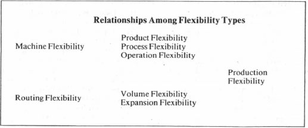
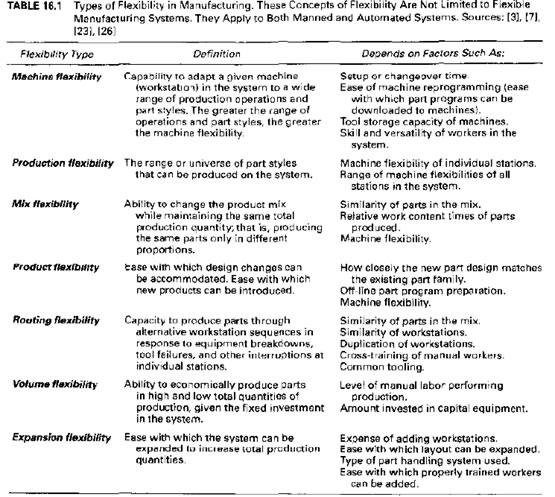

There are a number of factors which can affect the flexibility of a manufacturing system. Some of these are:
• Machine tools
o General purpose or custom
o Automatic tool changing
o Capacity of tool magazines
• Material handling systems
o Conveyor / carousel / tow-line / carts / robots
o Part movement equipment
o Tool transportation
• Storage
o Central buffer storage
o Buffer at each machine tool
o Local storage
• Computer control
o Distribution decisions
o Architecture of information system
o Types of decisions
o Control of parts
The flexibility of a manufacturing system can be classified in three categories; basic, system and aggregate. Each one is further subdivided, and are explained in detail below. Basic flexibilities:• Machine flexibility: the ease with which a system can be changed to produce a given types of parts. It is dependent on tool change time, assembly and mounting time, set up and preparation time, and software change time.
• Operation flexibility: the ability to change the order of the process in which parts are manufactured.
• Material handling flexibility: how easily a variety of types of parts can be transported from one machine to another, and positioned correctly for machining.
System flexibilities:• Volume flexibility: the ability of the system to run at a variety of production rates, while still maintaining the required profit margin. It depends on the running costs, set up costs, and the customer demand.
• Expansion flexibility: the ability for a system to be expanded over time, to be able to cope with larger demands in the future.
• Routing flexibility: the ease with which the system can adapt during machine breakdowns, so that production rates can be kept high, even during machine downtime. It can be helped by having machines which can perform overlapping tasks.
• Process flexibility: the ability to produce a given set of part types in different ways. These can also be made of different materials.
This is related to the machine set up costs, and the number of parts that can be produced simultaneously without requiring the use of batches.• Product flexibility: the ability to change the type of parts being produced, without incurring additional expenses, or wasting time.
Aggregate Flexibilities (Figure 2):• Program flexibility: the possibility to leave the system running for prolonged periods of time, without requiring the intervention of operators.
• Production flexibility: the range of part types that the system can produce. This depends on the technology and versatility of the tools in the system.
• Market flexibility: how well the system can cope with changes in market conditions, such as demands and costs.
 Figure 2 – Table showing relationship between flexibility types